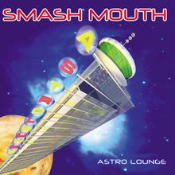

| Gender: Male |
| Status: Single |
| Age: 23 |
Sign: Aquawsomeis
|
| City: Flavortown |
| City: North Carolina |
Country: US
|
| Signup Date: 09/20/03 |
|
| Monday, May 15, 2006 |
| money is the rool of evil |
| Current Mood: angry |
Tapes are the currency of this universe. VHS tapes, music casettes, whatever you want to imagine.
You gain 1 Tape for each hour you spend with Richard...as a reward I guess. There are also other ways to win tapes, which I talk about below.
Using Tapes
Right now tapes are only used for playing reaction clips on stream. Check out that blog post for details.
Blockbuster Runs
When blockbuster is open, I can take you to turn in, and possibly find more, tapes. If you happen to find tapes, you will double the amount you took with you.
| Command: |
!blockbuster [# of tapes] |
| Example: |
!blockbuster 5 |
| Cooldown: |
20 min |
|

Currently Listening:
All Star
By Smash Mouth
Release Date: 08 June, 1999
|
| 4:21pm - 0 Comments - 0 Kudos |
|